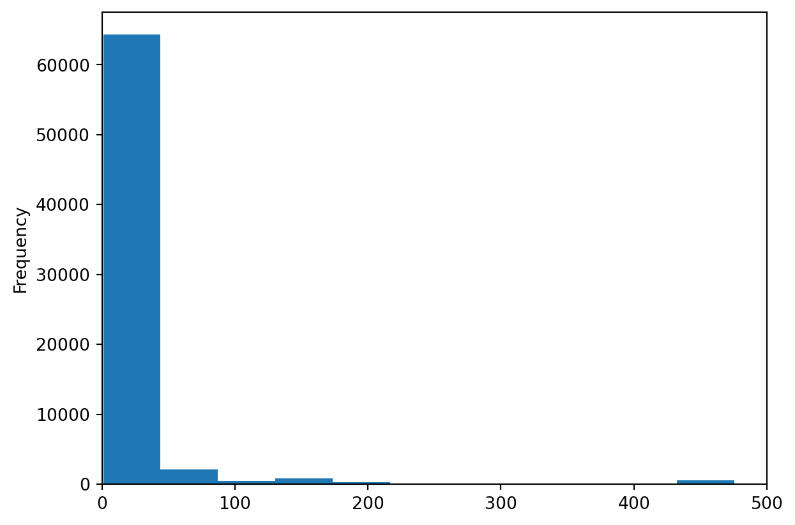

Data frame is 69,351 x 75DeskB’s Group Project
Brief Group Reflection
| What Went Well | What Was Challenging |
|---|---|
| A | B |
| C | D |
Priorities for Feedback
Are there any areas on which you would appreciate more detailed feedback if we’re able to offer it?
Response to Questions
1. Who collected the data?
1.*listings.csv : This dataset was created by automatically scraping public information from Airbnb’s Website. Murray Cox was one of the main founder and technicians of this mission driven project that aims to provide data and advocacy about Airbnb’s impact on residential communities. [1]
2.*London_Boroughs.gpkg and London-wards-2018 : This dataset is an extract from Ordnance Survey Boundary-Line product which is a specialist 1:10 000 scale boundaries dataset.
( 2 points; Answer due Week 7 )
An inline citation: As discussed on “Inside airbnb” (n.d.), there are many…
A parenthetical citation: There are many ways to research Airbnb (see, for example, “Inside airbnb,” n.d.)…
2. Why did they collect it?
( 4 points; Answer due Week 7 )
1.*listings.csv : Inside Airbnb is a mission driven project that provides data and advocacy about Airbnb’s impact on residential communities. We work towards a vision where communities are empowered with data and information to understand, decide and control the role of renting residential homes to tourists.
2.*London_Boroughs.gpkg : With a long history and evolving from . The Ordnance Survey aims to help governments make smarter decisions that ensure our safety and security, they also show businesses how to gain a location data edge and we help everyone experience the benefits of the world outside.

3. How was the data collected?
1.*listings.csv : Inside Airbnb collects its data primarily by scraping information from the Airbnb website. This process involves the following steps:
i.Web Scraping: Inside Airbnb uses automated scripts to systematically browse and extract data from Airbnb’s listings. These scripts navigate the website just like a human user would, but they do it much faster and on a larger scale.
ii.Data Extraction: Information about each listing, such as location, price, availability, number of bedrooms, reviews, and host details, is extracted and compiled.
iii.Data Aggregation: The collected data is then aggregated into a database. This database is organized to make it easier to analyze trends, patterns, and insights related to Airbnb’s offerings in various cities and regions.
iv.Regular Updates: The scraping process is repeated periodically to keep the database current, capturing new listings and updates to existing ones.
v.Public Accessibility: The aggregated data is often made available to the public through the Inside Airbnb website, enabling researchers, policymakers, and the general public to analyze Airbnb’s impact on housing markets and communities. It’s important to note that web scraping practices, like those used by Inside Airbnb, may face legal and ethical considerations depending on the website’s terms of service and regional laws regarding data privacy and usage.
2.*London_Boroughs.gpkg : .
( 5 points; Answer due Week 8 )
4. How does the method of collection impact the completeness and/or accuracy of its representation of the process it seeks to study, and what wider issues does this raise?
( 11 points; Answer due Week 9 )
5. What ethical considerations does the use of this data raise?
( 18 points; Answer due ?var:assess.group-date )
6. With reference to the data (i.e. using numbers, figures, maps, and descriptive statistics), what does an analysis of Hosts and Listing types suggest about the nature of Airbnb lets in London?
def( 15 points; Answer due ?var:assess.group-date )
7. Drawing on your previous answers, and supporting your response with evidence (e.g. figures, maps, and statistical analysis/models), how could this data set be used to inform the regulation of Short-Term Lets (STL) in London?
( 45 points; Answer due ?var:assess.group-date )
References
“Inside airbnb” (n.d.). Available at: http://insideairbnb.com.